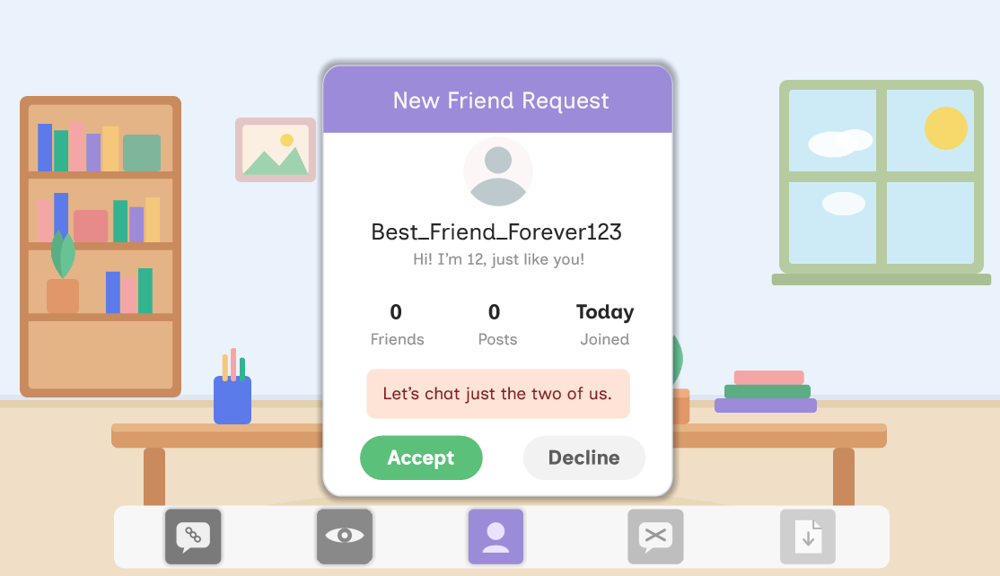

Common Digital Risks

Audience
Children aged 6–11, across a span where reading ability varies enormously where some learners decode fluently, others barely at all.
The gap
Children in this age band meet online risk before they have the words for it. A pop-up promising a free game, a stranger asking which school you go to, a group chat turning unkind. Each is obvious to an adult and invisible to a seven-year-old. Safety teaching at this age usually arrives as rules, and rules fail at the moment they're needed: a child who can recite "don't talk to strangers" will still accept the friend request, because nothing in the rule tells them that this is one of those moments. The missing skill is noticing, not knowing.
The approach
The module covers five risks: suspicious links, oversharing, fake accounts, cyberbullying and unsafe downloads, inside a single classroom scene rather than five separate lessons. Each risk asks the learner to find what's wrong before it asks what to do about it, so recognition is practised as its own step.
What success looked like
Success meant a learner could apply what they'd practised to a situation the module never showed them. A child who has only memorised the five examples is stuck the first time a different pop-up appears; a child who has learned to look for urgency, for a prize that arrives unasked, for a request that should come from someone they know, can handle the new one. So every risk was built to teach the warning signs rather than the specific case, and all five end at the same response: stop, check, ask, so the child has one thing to do whatever the situation turns out to be.
Role
Instructional Designer, Content Developer
Tools
Articulate Storyline, PowerPoint, Canva
Timeline
5 Minutes
Audience
Children aged 6–11
Design approach
Nothing load-bearing could depend on text, because the reading range across six to eleven is too wide to design for an average. Instruction is carried by the scene: what the learner sees, taps, and gets back. Where text appears it supports the image rather than the other way round.
The whole module takes place at one desk, with a dock of five device icons along the bottom of the screen. Each risk arrives on that desk, a pop-up on the tablet, a chat, a friend request, a download page. The constant frame does the orienting work that on-screen instructions would otherwise have to do, and it makes five topics feel like one place where different things happen rather than five modules stitched together.
Key decisions
Recognition before decision. Every risk separates noticing from choosing. The learner taps the warning signs in a scene: the too-good-to-be-true prize, the urgency language, the suspicious domain, before any choice appears. You cannot decide well about something you haven't spotted, and collapsing the two steps is what makes most safety training feel obvious on screen and useless in the moment.
The same four beats every time. Setup, find the clues, decide, checkpoint. By the second risk the learner knows the shape and can spend attention on the content instead of the interface. At this age, repetition of structure is what buys novelty of content.
Explanation instead of correction. A wrong choice opens a "Let's think about this again" panel that explains what the trick is doing, rather than marking the answer wrong. The point is not to score the child, it's to make the mechanism visible.
One rule, carried throughout. Stop, check, ask is introduced early, reinforced at each checkpoint, and closes the module. Three words a six-year-old can hold, applied to five different situations, is what makes the learning portable beyond the five the module shows.
States and triggers, not variables. The build deliberately avoids variables, keeping each risk as one base slide with layered states. It's a lighter file, and adding a sixth risk later means duplicating a pattern rather than rewiring logic.
Challenges
The main one was the age span. A module that works for an eleven-year-old patronises a six-year-old's older sibling; one pitched at six bores the top of the range. Carrying the difficulty in the scenes rather than the text was the resolution. The fake profile and the download page reward closer looking without demanding more reading, so an older child finds more in the same screen rather than needing a different one.
Storyboard
See the design plan behind this course, including screen-by-screen layout, narration, and interaction notes.
View storyboard (PDF) →